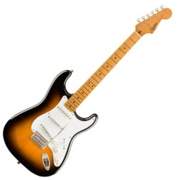

|  |
Lisandro Suárez🎸 Educador Musical, egresado del Conservatorio de Música de Bahía Blanca. 🎸 Comencé mis estudios en el año 2014, realizando 3 años de Formación Básica en Guitarra Eléctrica, y luego los 4 años de la carrera de Educador Musical. Formé Malva con Maxi Ftulis, y luego Toriaji y Asado Barrabrava. |
| Año | Trabajo |
|---|---|
| 2010-Actualidad | Atención comercial en La Espuma |
| 2010-2014 | Clases particulares de Inglés |
| 2010-Actualidad | Clases particulares de Guitarra |
| 2018-Actualidad | Profesor de Música en Jardín Margarita |
| 2021-Actualidad | Clases de Música en Sueños Encantados |
|
Habilidades Musicales |
|||||||||||||||||||||
|---|---|---|---|---|---|---|---|---|---|---|---|---|---|---|---|---|---|---|---|---|---|
|
|